Références
Des praticiens que nous avons rendus visibles.
Onze sites, tous publics : ouvrez-les. Ce sont d'anciens clients, accompagnés avant la création de HANA. Nous ne publions pas leurs chiffres : ils leur appartiennent. Pour savoir ce que le référencement a changé pour eux, le plus simple est de leur demander : nous vous mettons en relation, avec leur accord.
Collaborations antérieures à la création de HANA, en référencement et contenus, par S. Kazi-Tani, fondatrice de HANA : dix ans comme rédactrice SEO spécialisée en chirurgie esthétique, dont trois à la direction du service communication de la Clinique Phenicia, à Marseille, plus grande clinique de chirurgie esthétique de France.
- 11sites
référencés - 15chirurgiens
accompagnés - 10ans dans
votre spécialité
Conception, design et référencementSite créé ou refondu par nos soins, puis référencé
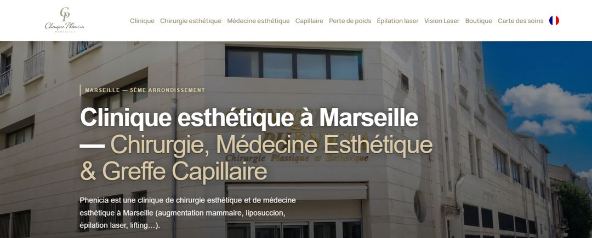
Plus grande clinique de chirurgie esthétique de France. Trois ans à la direction du service communication : site, contenus et référencement, sur la même période que le centre de médecine esthétique.
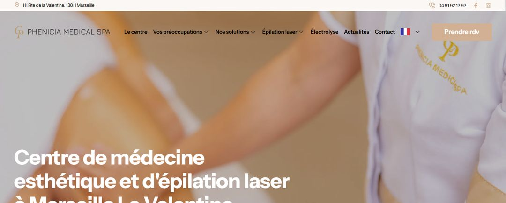
Centre de médecine esthétique de 600 m². Site conçu, réalisé et référencé de A à Z, sorti en 2025 : architecture SEO, pages actes, contenus, fiche Google.
RéférencementGoogle, fiche Google, visibilité IA, contenus
Pour chacun de ces praticiens, nous avons rédigé les pages actes et les contenus experts, structuré le SEO du site et suivi les positions sur les requêtes de leur spécialité et de leur ville. Le design de ces sites n'est pas de nous.
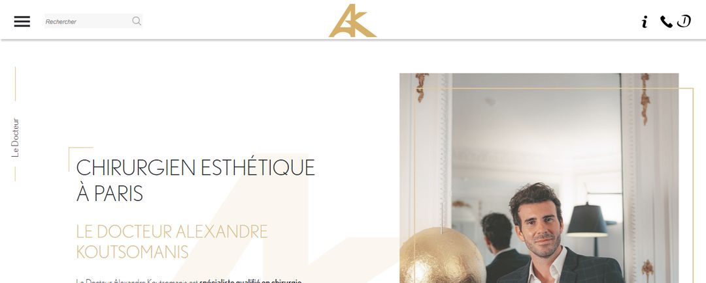
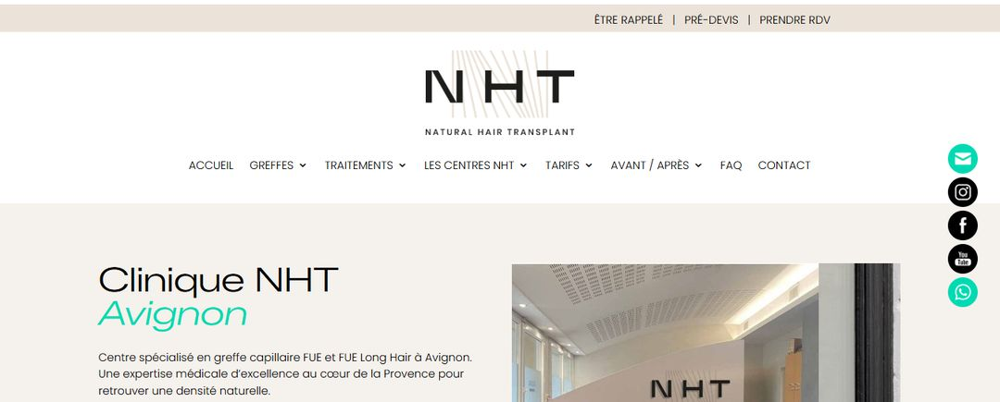
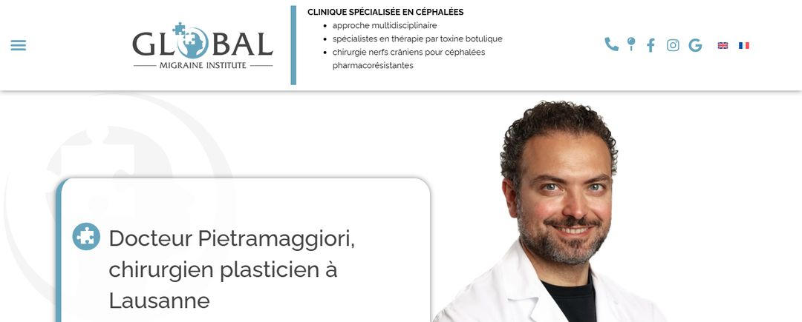
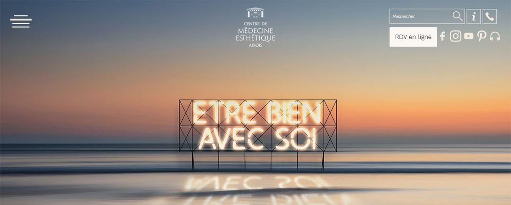
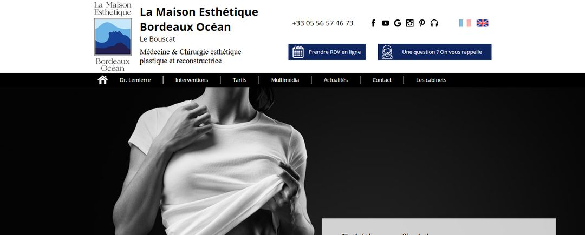
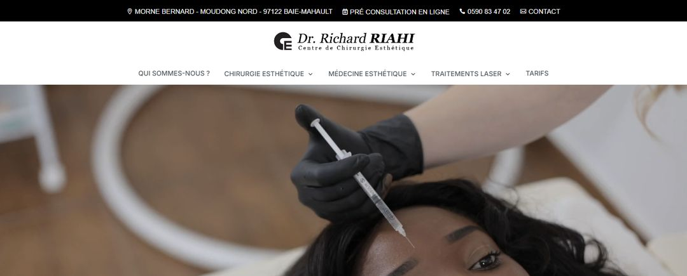
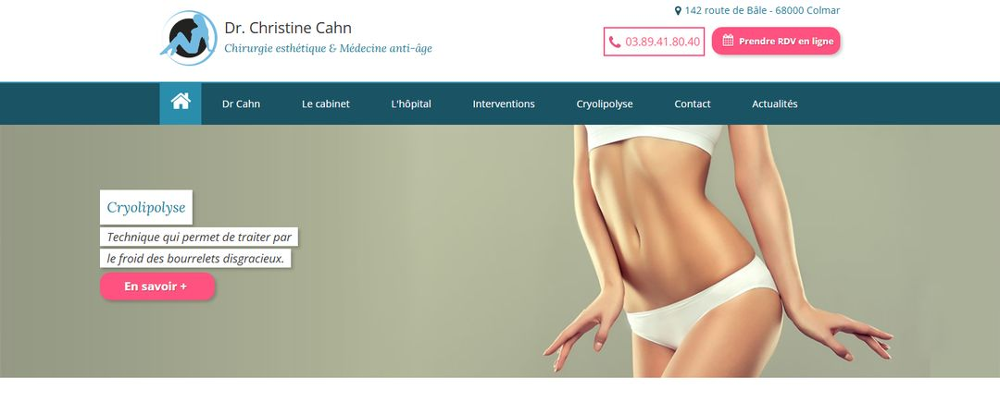
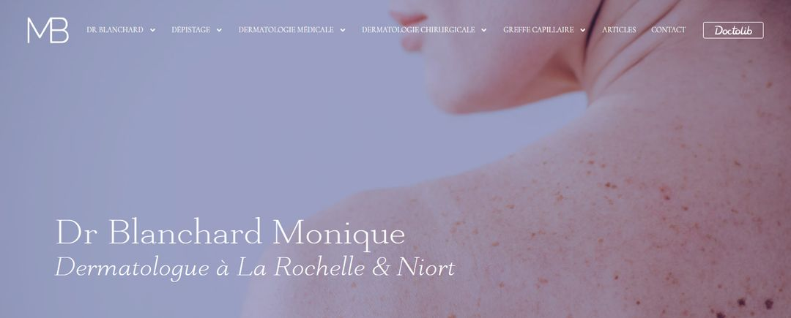
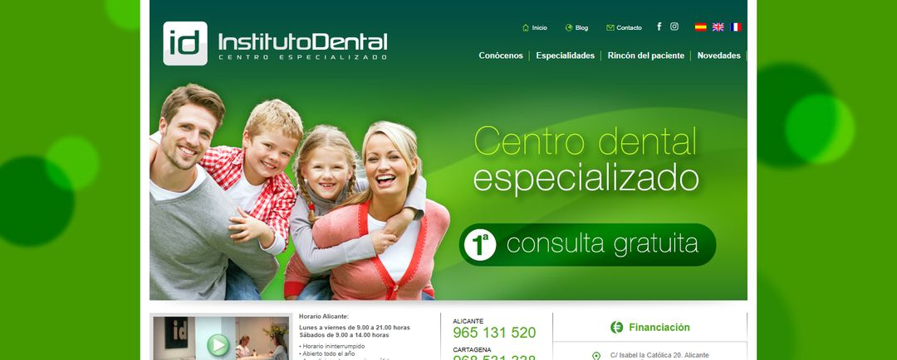
De Paris à Lausanne, de Colmar à la Guadeloupe. Paris · Marseille · Aix-en-Provence · Avignon · Bordeaux · Royan · Colmar · Niort · La Rochelle · Lausanne · Guadeloupe · Alicante.
Ce que vous pouvez vérifier
Pas de témoignages. Des sites, des requêtes, et un numéro.
- 01
Ouvrez les sites
Chaque site ci-dessus est en ligne. Regardez les pages actes, la structure, les contenus : c'est ce que nous avons écrit pour ces praticiens, et ce que nous écrirons pour vous.
- 02
Tapez les requêtes
Une spécialité, une ville, un acte. Les positions se lisent en direct dans Google. Nous les regardons ensemble en visio, requête par requête.
- 03
Demandez-leur
Leurs chiffres leur appartiennent : demandes reçues, actes, évolution. Nous vous mettons en relation, avec leur accord, et ils vous répondent eux-mêmes.
Nous ne publions ni positions, ni chiffres d'activité, ni avis sollicités. En visio, nous vous présentons deux cas chiffrés et anonymisés, praticien par praticien : ce qui a été fait, en combien de temps, et ce que ça a donné.
Les prochaines références
Les membres du Réseau HANA.
Chaque praticien qui rejoint le réseau aura ici sa page : identité, parcours, actes, lien vers son site, une page par ville. Un seul chirurgien plasticien par ville et par spécialité, inscrit au contrat.